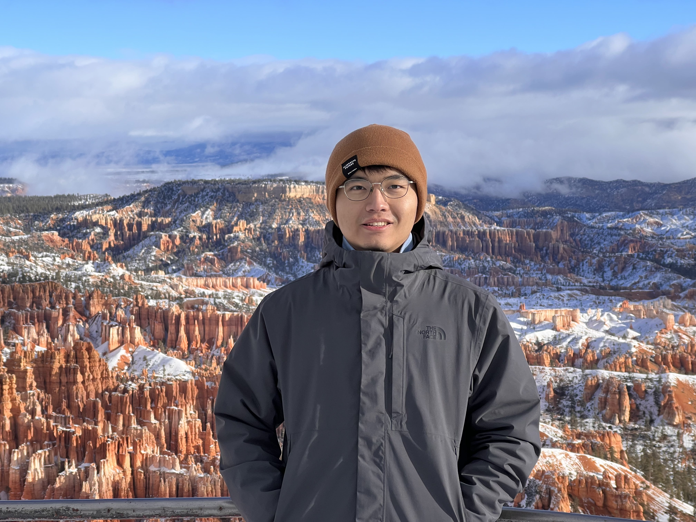

|
Chih-Fan (Rich) Pai
PhD Student Department of Electrical and Computer Engineering University of California San Diego |
 |
|
About I am a PhD student in Electrical and Computer Engineering (ECE) at the University of California San Diego (UCSD), where I am advised by Prof. Yang Zheng. I obtained my MS in Communication Engineering from National Taiwan University (NTU), where I was advised by Prof. See-May Phoong. I received my BS in ECE from National Yang Ming Chiao Tung University. |
|
Research I am broadly interested in the theory of optimization and sequential decision-making under uncertainty, with applications in stochastic, robust, and nonstochastic control. Currently, I am investigating the problems of partially-observed linear quadratic (LQ) stochastic control and robust control from a policy optimization perspective, by analyzing their nonconvex optimization landscape with an overarching goal to develop model-free learning algorithms for the design of control policies with performance guarantees. Previously, I worked on reward-free exploration in reinforcement learning, specifically the problem of online active model estimation for Markov decision processes. I also worked on signal processing for communication systems for my MS study. News
Talks
|